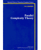
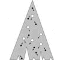
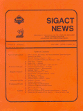
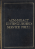
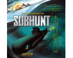
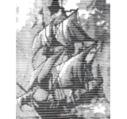

Ian Parberry received a Bachelor of Science with First Class Honours in Computer Science and Mathematics in 1981 from the University of Queensland in Australia and a PhD in Computer Science in 1984 from the University of Warwick in England. He then took up a tenure-track position in the US at the rank of Assistant Professor. He was promoted to Associate Professor in 1990 (receiving tenure in 1991) and to Full Professor in 1995. He is author of over 100 technical publications including over 75 articles (23 as sole author) in peer-reviewed journals, conferences, and workshops. His publications have been cited thousands of times, his h-index is 28, his i10-index is 60, and his Erdös number is 3.
Ian Parberry is a pioneer of academic game development education and research who has been teaching game programming to undergraduates since 1993, when he established the Laboratory for Recreational Computing (LARC). LARC alumni have credits on at least 66 commercial video games that have sold a total of over 180 million copies, estimated to be worth more than $9 billion in revenue. The most famous of these alumni is Jason West, co-founder of the Call of Duty franchise. The Princeton Review and GamePro Magazine evaluated UNT LARC in the top 50 out of 500 game design programs in North America in 2010.
Dr. Parberry's books include two research monographs, Parallel Complexity Theory (1987) and Circuit Complexity and Neural Networks (1994); two trade books, Learn Computer Game Programming with DirectX 7.0 (2000) and Introduction to Computer Game Programming with DirectX 8.0 (2001); and three textbooks, Problems on Algorithms (1995), 3D Math Primer for Graphics and Game Development (2002, 2011), and Introduction to Game Physics with Box2D (2013).
Ian Parberry's research record covers a wide range of computing topics that include analog computing, artificial intelligence, artificial neural networks, audio computing, combinatorial search, computational complexity theory, computational economics, circuit complexity, computational geography, computational learning theory, computational meteorology, computational number theory, computer graphics, computer science education, data structures, design and analysis of algorithms, entertainment computing, fault-tolerant computing, game programming, game programming education, interconnection networks, load sharing, mathematical puzzles, mechatronics, packet routing, parallel computing, path planning, procedural content generation, philosophy of computing, randomized algorithms, real-time algorithms, robotics, software agents, sorting networks, video game cognitive assessment, and visualization of algorithms.
Dr. Parberry's notable research achievements include the invention (with Dr. Leslie M. Goldschlager in 1981, published in 1986) of the complexity class ⊕P (independently invented by Dr. Christos Papadimitriou); the first description (with Dr. Piotr Berman and Dr. Georg Schnitger in 1986) of the complexity class TC0; the first proof (in 1989) that there is no 9-input sorting network of depth 6; and the first proof (with PhD student H.-L. Tseng in 1996) that conventional computers can be exponentially faster than neural networks (specifically, planar Hopfield networks). He has two NP-completeness results to his credit: the verification problem for logarithmic depth sorting networks, and the loading problem for 6-node neural networks.
Dr. Parberry's current research interests are clustered around game development, ranging from procedural content generation to cognitive assessment of video gameplay using research methods from neuropsychology. He is assisted in his research by an able team of PhD students whose 8 alumni include Dr. Zoran Obradovic (1991, now the Laura H. Carnell Professor of Data Analytics and Full Professor in the Department of Computer & Information sciences at Temple University), Dr. Timothy Roden (2005, now an Associate Professor in the Department of Computer Science at Lamar University), and Dr. Jonathon Doran (2014, now an Assistant Professor in the Department of Computer & Information Science at Bradley University). His research is enriched by past and present interdisciplinary collaborations that include Dr. Ki Yin Chang (Professor in the Department of Merchant Marine at the National Taiwan Ocean University), Max B. Kazemzadeh (Associate Professor in the Department of Art, Communication & Theater and Director of the Art & Media Design Program at Gallaudet University) and Dr. Thomas D. Parsons (Fellow of the National Academy of Neuropsychology).
Ian Parberry served as Editor of ACM SIGACT News, the quarterly newsletter of the ACM Special Interest Group on Algorithms and Computation Theory, from 1991 to 2002. He has also served on the Editorial Boards of Journal of Computer and System Sciences (1989-2014), Information and Computation (1990-1998), Entertainment Computing (2008-2012), Journal of Game Design and Development Education (since 2010), and IEEE Transactions On Computational Intelligence and AI In Games (since 2008). He served from 2009 to 2014 as a founding member of the Board of Directors of the Society for the Advancement of the Science of Digital Games, which organizes the annual Foundations of Digital Games conference. He served as Interim Chair of the Department of Computer Science Dr. Ki Yin Chang (then a Professor in the Department of Merchant Marine at the and Engineering at the University of North Texas from 2009 to 2011.
Dr. Parberry has had an academic web page since 1994 when he installed a web server on his desktop workstation. He created the first ACM SIGACT web pages in 1995 and served as webmaster until 2002. He received the ACM-SIGACT Distinguished Service Prize in 1998 "In recognition of his distinguished editorship of SIGACT News over the past seven years, his creation of the online version of SIGACT News and the SIGACT web pages, and his role in designing the TCS virtual address book and maintaining the TCS genealogy." He is also known for his guides to academic presentations and refereeing in the 1980s and 1990s.
Dr. Parberry learned to program in 1975 in assembly language on a typewriter-sized programmable calculator and in FORTRAN IV on a DEC PDP KA10 using punch cards. He remains an active C++ programmer who publishes open source software for Windows and Unix on GitHub. He has commercial programming experience consulting, contracting, and subcontracting for 9 companies including 4 game developers (1 AA, 1 shareware and 2 startup), the US Navy, and Southern California Offshore Range (SCORE). His control software for multiple unmanned vehicles saw extensive use by the US Navy in the mid to late 1990s for live ammunition training exercises and was adopted by the US Army for control of supply drops by parachute. He was named a Microsoft Most Valuable Professional for Windows and DirectX for six consecutive years from 2004 to 2009. "Most Valuable Professionals (MVPs) are recognized, credible, and accessible individuals with expertise in one or more Microsoft products who actively participate in online and offline communities to share their knowledge and expertise."
Ian Parberry was named an ACM Distinguished Member in 2015. The ACM Distinguished Member program, initiated in 2006, recognizes those members with at least 15 years of professional experience who have made significant accomplishments or achieved a significant impact on the computing field.
Dr. Parberry is also an artist known for his ASCII art. In 2008 Max Kazemzadeh and Ian Parberry created and exhibited a digital media art installation Max is a Pushover at the University of North Texas Artspace in Fort Worth, Texas. The UNT Artspace FW gallery was open from September 2005 through March 2008 and was host to eleven avant-garde exhibitions. Max is a Pushover is a digital fusion of real space with virtual space.